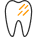

Это поможет Вам
Избавиться от неприятного запаха изо рта
Справиться с темным налетом на зубах

Предотвратить развитие кариеса, а, соответственно, и избежать затрат на его лечение
Если у вас установлены имплантаты или несъемные зубные протезы, продлить срок их службы
Если у вас были диагностированы сопутствующие заболевания, такие как пародонтит, наши специалисты рекомендуют
прибегать к профессиональной гигиене полости рта каждые 3 месяца
Цены на профессиональную гигиену полости рта
- Комплексная профессиональная гигиена полости рта - 4750
- Профессиональная чистка методом Air-flow фронтальных зубов (1 челюсть) - 1450
- Профессиональная чистка методом Air-flow зубов одной челюсти - 1800
- Снятие наддесневых зубных отложений - 2350
- Медикаментозная обработка слизистой десен - 350
В стоимость включено
 Консультация ведущих специалистов
Выявление мест скопления бактериального налета, наличия кариозных полостей и признаков заболеваний десен
Бережное снятие зубного налета в труднодоступных местах аппаратом AIR-FLOW
Медикаментозная обработка слизистой
Укрепление эмали путем фторирования
Подбор средств гигиены, наиболее эффективных в вашем случае
Консультация ведущих специалистов
Выявление мест скопления бактериального налета, наличия кариозных полостей и признаков заболеваний десен
Бережное снятие зубного налета в труднодоступных местах аппаратом AIR-FLOW
Медикаментозная обработка слизистой
Укрепление эмали путем фторирования
Подбор средств гигиены, наиболее эффективных в вашем случае